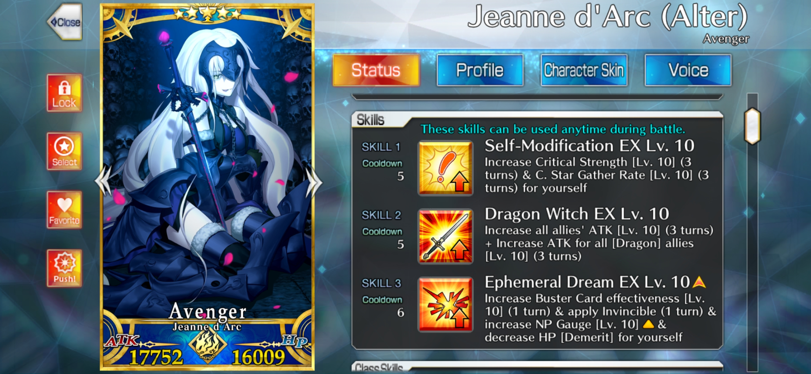

Clareza na Transmissão de Informações
Independente do gênero do jogo que você está produzindo, uma das principais considerações que você deve ter em mente é o modo que as informações estão sendo transmitidas. Nesse artigo, o foco principal será a comparação entre distintas formas de mostrar ao jogador certas informações, comparando casos semelhantes e ressaltando os aspectos positivos e negativos observados entre os casos.
Caso 1. PAYDAY 2 x PAYDAY 3
Começamos com um caso curioso onde os desenvolvedores, de certa forma, se recusaram a aprender com seus erros.
Contextualizando um pouco, ambos jogos analisados são da mesma franquia, eles pertencem ao gênero de ação e tiro na perspectiva primeira pessoa focados em uma fantasia de ladrões. O importante para nós nesse artigo são as armas utilizadas no jogo, seus atributos e como eles são mostrados.
Ambos os jogos possuem uma vasta gama de armas diferentes que possuem vários fatores, como dano, o quão barulhenta a arma é, o recúo e facilidade de uso dessa arma, a sua taxa de tiros, munição, etc.. Porém, o jeito que eles mostram essas informações (pelo menos atualmente) difere bastante.
No começo do jogo, PAYDAY 2 mostrava os atributos de uma arma por barras, como ilustrado na imagem abaixo.

Esse método de mostrar atributos foi utilizado na beta do jogo e recebeu diversas críticas, majoritariamente dos usuários mais investidos no jogo, por ser muito obtuso. Fora a falta de alguns atributos que são convencionais nesse tipo de gênero, como a taxa de fogo da arma, as barras não indicavam com clareza os atributos.
Como os jogadores deveriam interpretar uma arma com "dano com uma barra não muito cheia"? Já que a barra não está muito cheia, isso parece ser ruim, mas o quão ruim? Essa barra faz uma comparação com o que? Você pode modificar as armas, essas modificações estão fazendo o que? E essa arma sequer está modificada? Os desenvolvedores mudaram pouco tempo depois para um modelo mais específico que utiliza números, ilustrado na imagem abaixo.

Esse novo modelo foi aceito pela grande maioria dos jogadores como superior ao anterior, sendo bem mais completo, mostrando até os efeitos das habilidades modificações feitas na arma e como elas afetam os atributos e sendo menos abstrato pela utilização de números.
Esse ajuste não se manteu no desenvolvimento do jogo seguinte da franquia, PAYDAY 3, que retornou ao abstrato modelo de mostrar as estatísticas das armas por barras, como demonstrado abaixo.

Esse modelo foi, novamente, majoritariamente criticado pelos jogadores do jogo, que dessa vez questionam de forma mais dura o por que da adoção desse modelo, já que a franquia já tinha se deparado com esse problema.
O consenso geral da playerbase dos jogos é que o modo que a franquia PAYDAY mostra os atributos de suas armas é meio confuso, porém o modo que utiliza números é mais aceito.
Caso 2. Honkai: Star Rail x Fate/Grand Order
Mudando um pouco de gênero, ambos os jogos abordados a seguir são RPGs baseados em turno. Em ambos os jogos, os jogadores podem montar times com personagens variados, com habilidades variadas para vencer batalhas. Com uma variedade grande de personagem, os desenvolvedores do jogo precisam transmitir de forma clara o que essas habilidades fazem.
Começando com o jogo Fate/Grand Order, os desenvolvedores escolheram mostrar as habilidades dos personagens de uma forma mais geral, sem muitas especificações.

Enquanto algumas habilidades de outros personagens de fato mostram números concretos, a maioria delas seguem essa linha de [níveis] e até adjetivos. Esse método é ainda hoje criticado por uma parte dos jogadores do jogo por ser muito abstrata. O nível da uma habilidade determina o valor de uma habilidade, como aumentar o ataque dos personagens por 10% no [Nível 1], 20% no [Nível 5] e 30% no [Nível 10], porém esses valores exatos não estão disponíveis para os jogadores.
Outro recurso utilizado pelo jogo em algumas habilidade é dizer que elas 'significantemente' aumentam um efeito x. Esse adjetivo é usado para mostrar que essa habilidade é mais forte comparada a outras que fazem a mesma coisa, porém, sem a presença de nenhum valor para comparação, ele também é bem abstrato.
Uma queixa constante é que esses números podem ser encontrados na Wiki do jogo, porém os desenvolvedores não os mostram em nenhum lugar no próprio jogo, então os jogadores que buscam esses números precisam buscar recursos externos para adquirir essas informações.
Falando agora sobre o outro jogo do caso, Honkai:Star Rail originalmente mostrava suas habilidades e seus efeitos por meio de números, porém o jogo adicionou mais uma forma do usuário absorver as informações do jogo, com um modo mais 'simplificado'.
A possibilidade de escolher o quão detalhada você quer suas informações é um ótimo modo de agradar várias partes dos seus jogadores: aqueles que buscam por informações detalhadas para formular estratégias avançadas têm essa opção com números, enquanto a parte mais casual pode saber o que está acontecendo com um breve resumo.
Caso Bônus: Fallout 4
Nosso último exemplo mostra que habilidades e atributos não são a única informação que você deve passar para o jogador. O jogo Fallout 4 é um RPG de ação onde você tem a possibilidade de ter diálogos com os NPCs e fazer escolhas nesses diálogos.
Essa escolha de diálogos não é algo novo na franquia, porém os desenvolvedores decidiram tentar algo novo no quarto jogo e introduziram uma escolha de diálogos baseada na escolha de 4 setas direcionais, que apresentam um breve resumo da fala do seu personagem.
Esse novo modelo de escolha de diálogos foi fortemente criticado pelos fãs da franquia, que relataram que não só ficavam constantemente insatisfeitos com o resultado da opção selecionada como também não conseguiam escolher direito a fala que queriam pela falta de informação.
O sistema de diálogo não sofreu nenhuma alteração do lado dos desenvolvedores, porém foram desenvolvidas diversas modificações do jogo que tentam aproximar o novo sistema aos usados nos outros jogos da franquia.
Conclusão
Ao analisarmos esses casos abordados no artigo, porém, podemos perceber alguns pontos importantes que devem ser seguidos para uma melhor experiência do jogador.
Antes de decidir como você quer transmitir certa informações, tenha em mente seu público alvo. Talvez um sistema com detalhes super específicos sobre os atributos de um item não seja a melhor escolha quando você está produzindo um jogo para um público mais casual, ou um sistema muito simples pode não agradar seu público se seu objetivo é desenvolver um jogo com muitas minúscias e sistemas.
De forma geral, não utilize métodos muitos obscuros como as barras utilizadas na franquia PAYDAY ou o menu de escolha de diálogo do Fallout 4 para evitar que os jogadores fiquem confusos, por exemplo.
Se possível, dê opções para os jogadores de como absorver uma informação, como é o caso do Star Rail.
Ainda existem diversas informações não abordadas no artigo que devem ser passadas aos jogadores, como objetivos do jogo, configurações dos menus, controles, etc.. Como dica principal, tente transmitir essas informações da forma mais adequada possível perante seu contexto.